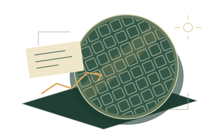

案例 001 / 半导体产业
好消息，
值得加仓吗？
订单开始改善，价格却已提前上涨。
你会调整眼前的配置，还是继续等待证据？

桌上的三条线索
已查看 0 / 3先拆开一张证据。支持与反对的理由，可能同时成立。
这一次，你怎么做？
长期配置是起点只调整半导体与 Cash，其余行业保持原计划。
案例 001 / 半导体产业
订单开始改善，价格却已提前上涨。
你会调整眼前的配置，还是继续等待证据？

先拆开一张证据。支持与反对的理由，可能同时成立。
只调整半导体与 Cash，其余行业保持原计划。